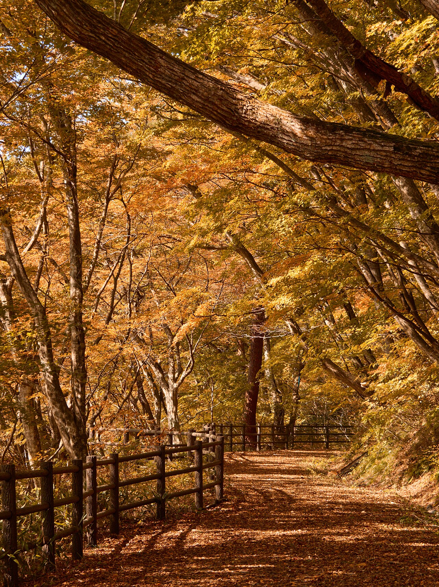
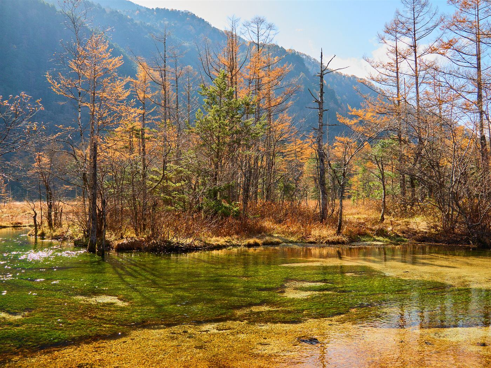
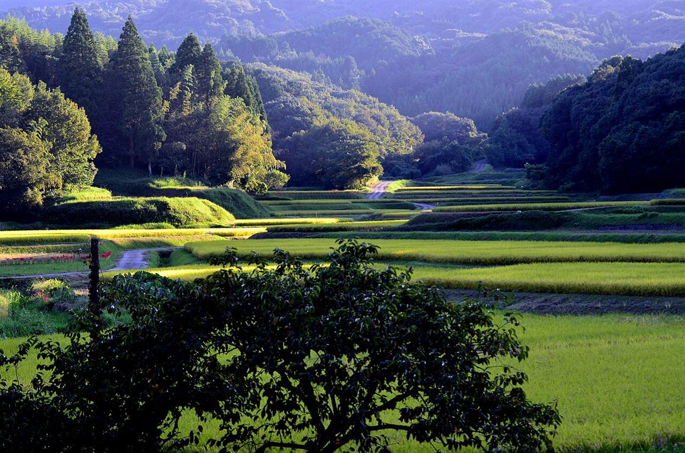

01 / BASIC
佐野市栄町のお店です
おんだ整体・整骨院は、栃木県佐野市栄町23にあります。ここでは確認できている情報だけを掲載し、わからない項目は「準備中」としています。
基本情報と、これから充実させていくご紹介ページです。

おんだ整体・整骨院は、栃木県佐野市栄町23にあります。ここでは確認できている情報だけを掲載し、わからない項目は「準備中」としています。

屋号に込められた想いは、お店の方にお話をうかがってから、こちらにまとめる予定です。
由来・ごあいさつ

ご相談やご予約方法については、お電話でお問い合わせください。Instagramでもお店の様子をご覧いただけます。